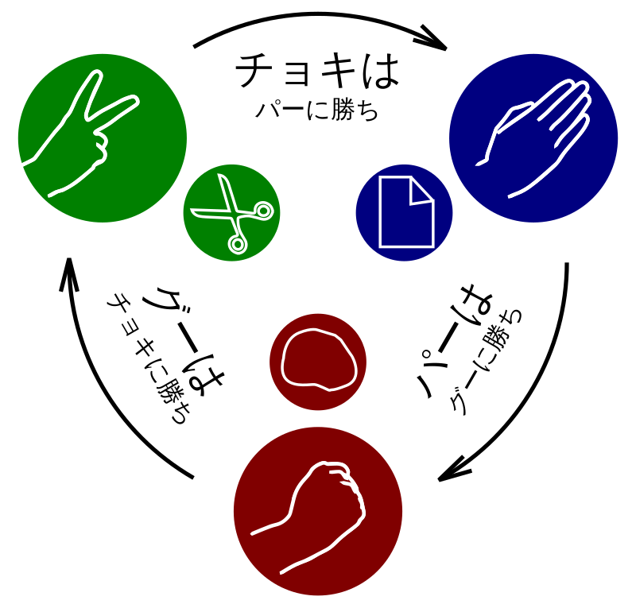

じゃんけんとは？
じゃんけんは、グー、チョキ、パーの3つの手を使った日本の伝統的なゲームです。 シンプルながらも奥が深く、友人同士や家族、さらにはビジネスの場でも使用されることがあります。
ルール
-

- グーはチョキに勝ちます。
- チョキはパーに勝ちます。
- パーはグーに勝ちます。
同じ手を出した場合は引き分けになります。
遊び方
じゃんけんを始めるには、参加者全員が「じゃーんけーんぽん！」と声を合わせ、同時に手を出します。 勝敗は上記のルールに従って決まります。
ゲーム
じゃんけんがしたくなった場合は、 こちらのゲームをプレイしてください！